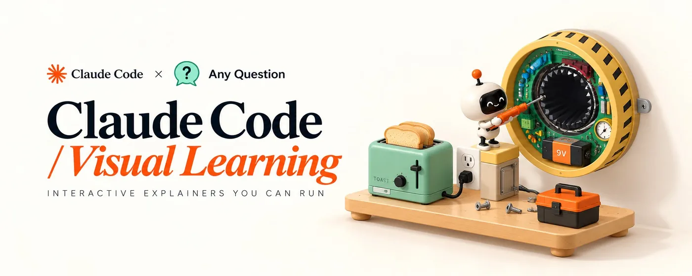
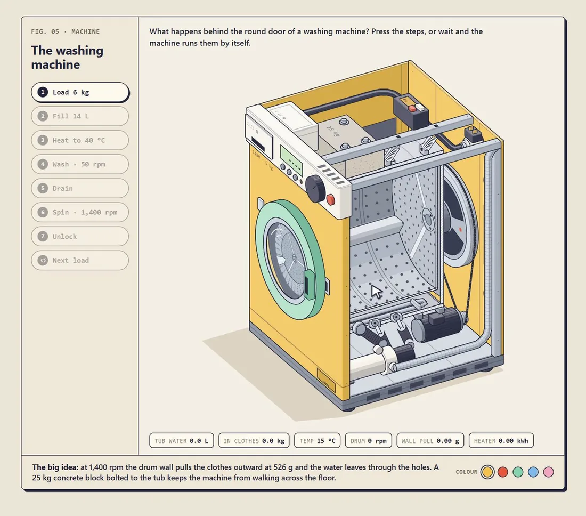
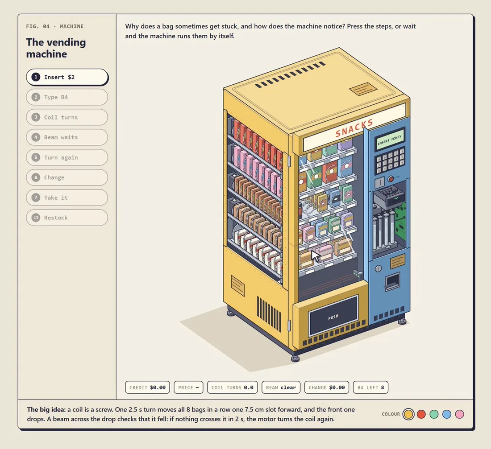

examples/raptor-engine，浅色主题，点火状态。发动机和试车台是 SVG，尾焰是同一等轴测相机里的 WebGL 着色器。发布帖
隆重介绍 Anatomy
用一句话描述一台机器，Claude 就让它活过来。
· 可交互的等轴测线框图，能旋转、细看、探索
· 用 WebGL 着色器画火焰、水、等离子体等
· 真正的 3D 运动，单个零件可以转动、移动
以 Agent Skill 形式安装。完全开源。
帖子附一段约 39 秒的演示视频。下面是视频截帧：输入 /anatomy explain how a big airliner turbofan engine like the A380's makes thrust, interactive，Claude 画出“涡扇发动机地面试车”图，拖动就能推油门，读数随之变化。


Anatomy 是什么
这个 Claude Skill 解释一个想法的办法，是把它造成一件真实、能运转的物体。它画的是精心制作、可交互的等轴测图，由许多精确的小零件组成，输出为 SVG、WebGL 和 3D。
你让 Claude 画一张解释某个技术概念的图，Anatomy 会让它发明一件实物，这件实物的运转方式就是这个概念。比如，“没变化时就跳过工作”的缓存键，变成一把只有所有弹子都对齐才能转动的弹子锁。一个 GPU 上下文服务多块画布，变成一台龙门绘图仪，唯一的打印头依次走访 16 个孔位。
接着，Claude 用几十个小而实、有明暗的零件把这件东西搭出来，放进一张带标题、提示和实时读数的图卡，让它随指针和键盘平稳地动起来，再逐个放大每个接缝来检查自己的成果。图上显示的每个数字，都来自驱动零件运动的同一个小模型。
快速上手
npx skills add wheresryan22/anatomy -g -a claude-code然后在 Claude Code 里输入：
/anatomy explain how a token bucket rate limiter works, interactive就这么简单。不需要 API key，也不用 npm install：这套工具只用 Node 的内置模块。
图库


每张截图都是 examples/ 里某个页面的浅色主题，用这个 Skill 自带的 scripts/capture.mjs 和 scripts/drive.mjs 截取。构建好的页面已经提交进仓库，打开 examples/ 里任意 .html 就能试。
能做什么
三类图，共用一套工具、一个相机、一套工艺规则。
| 类型 | 说明 | 示例 |
|---|---|---|
| SVG | 核心。四色调明暗的实心等轴测零件，从后往前绘制，放在带实时读数和缓动动画的图卡里。可以输出独立 HTML 页面、内嵌样式的单个 .svg 文件，或 React/Next.js 组件。 | dial-indicator、desk-computer、arcade-cabinet、test-rig |
| SVG + WebGL | 用来画线条画不出的东西：火、尾气、水、焦散、灯光、辉光、蒸汽。着色器跑在前后两层 SVG 之间的 canvas 里，用的是图本身的等轴测相机，所以融在画面中。没有 WebGL 时，SVG 照样能看。 | raptor-engine、ripple-tank |
| 3D（beta） | 能真正 3D 转动的零件：会转的表盘或转台、能弯的手指、断开后掉落的部件。运动零件每帧按工具的规则重新投影、着色，其余部分保持静态。 | turning-dial |
每张图可以是浅色或深色。浅色是这个 Skill 优先设计的主题，着色器也一样。
安装
Anatomy 是标准的 Agent Skill：一个根目录下有 SKILL.md 的文件夹，这个仓库就是那个文件夹。安装方式任选一种：
- skills CLI，装给自己：
npx skills add wheresryan22/anatomy -g -a claude-code→~/.claude/skills/anatomy - skills CLI，装进单个项目：
npx skills add wheresryan22/anatomy→.claude/skills/anatomy - git，装给自己：
git clone https://github.com/wheresryan22/anatomy.git ~/.claude/skills/anatomy - git，装进单个项目：
git clone https://github.com/wheresryan22/anatomy.git .claude/skills/anatomy - 直接下载：下载 ZIP 解压，把
anatomy-main改名为anatomy，放进~/.claude/skills/
skills CLI 会复制整个仓库，示例也在内（约 10 MB），而且要求较新的 Node.js：CLI 1.7.1 版需要 22.20 或更高。用 git 装进项目时，记得提交 .claude/skills/anatomy，团队成员就能一起用，以后在该目录里 git pull 即可更新。Claude Code 会在运行中的会话里识别新 Skill。如果会话开始时 skills 文件夹本身还不存在，运行 /reload-skills。
用法
输入 /anatomy，再说明这张图要解释什么。不点名这个 Skill 也行：只要你要的是等轴测插图、文档/博客/落地页的解释图，或者交互式讲解，Claude 都会加载它。更多提示词示例（来自仓库的 evals）：
/anatomy a figure for our Next.js docs on database connection pooling: a pool of 10 connections, requests borrow one and give it back, and when all 10 are busy new requests wait in a queue. A React component plus a static HTML preview, dark theme.
/anatomy an isometric SVG explaining how a CDN edge cache works, cache hit vs miss, TTL of 60 s, for a dark landing page. Just the SVG file and a PNG preview.
/anatomy a Bunsen burner on a lab bench: opening the air collar turns the lazy yellow flame into a roaring blue cone. WebGL for the flame, one HTML file, dark theme.想得到最好的图，有三个习惯：
- 说出想法，而不是画法。讲清楚要解释什么，并给出真实数字（尺寸、数量、速率、阈值）。发明那件实物是 Anatomy 的主要工作，它做得比“方框加箭头”式的描述更好。
- 或者直接点名实物。如果你心里已经有了那台机器（意式咖啡机、本生灯、锁），就直接说，并说明哪些部分要动。
- 说清用在哪里。独立 HTML 页面、单个 SVG 文件，还是 React/Next.js 组件；浅色还是深色。不同输出的构建方式不一样。
交付的图是归你所有的源码：一个 Node 构建脚本和它生成的页面。如果是 React，则是几何模块、一个负责静态图的服务端组件，加一个负责动效的客户端组件。工具包会一并附上。
示例
每个不依赖框架的示例都有 Node 构建脚本，在旁边生成独立页面，加 --light 就是浅色主题。
- dial-indicator：支架上的百分表，下面是一排量块。最小的示例，约 300 行。
- desk-computer：1984 年风格的台式电脑，键盘可以打字，字显示在机身正面平面里画出的 CRT 上；关机时画面收成一条线、再缩成一个点。约 85 个实体。
- arcade-cabinet：拆掉侧板的街机柜。投进一枚硬币，它会滚下投币槽，经过投币开关线落进钱箱；一个脉冲沿线缆传到主板，CRT 预热后进入演示模式。约 240 个实体、15 根线缆。
- raptor-engine：试车台上的 Raptor 2 发动机，可拆成 11 个组件；WebGL 尾焰、激波、溅射和蒸汽渲染在前后两层 SVG 之间。它是密集管路、平滑明暗、淡入淡出和审计的参考范例，构建要几分钟。
- ripple-tank：立在高脚上的学校波纹水槽，下面是纸屏，从 44° 仰角观看。两层 WebGL 对齐到等轴测平面，由
model.mjs里的纯模型驱动。 - test-rig：来自某个 React/Next.js 站点的生产级图：弹簧滑台上的玻璃按钮、导轨上的手指探头、读出倾斜量的百分表。53 个实体。没有构建脚本，直接复制进 React 应用。
- spot-plate：同一站点的第二张图：点滴板上六对玻璃液滴，随着一排塞尺张开融成一块玻璃。每对液滴由一个距离场绘出。没有构建脚本。
- turning-dial：3D 模式。一个能真正 3D 转动的密码盘，上面有一只小机械手，还有能抬起的三关节手指和一个会断开、自由下落的部件。
stress.mjs是放在杂乱工作间里的 380 零件机械手，用来测性能。
对 raptor-engine 和 arcade-cabinet 运行 build.mjs --audit、对 turning-dial 运行 build.mjs --light --audit，还会执行几何审计。3D 审计比较慢。
工作原理
- SKILL.md 是 Claude 读的文件。它规定了工作流：先收集真实数字，发明实物，写零件清单，规划场景，用工具包一次建好几何，从后往前绘制，加框，让它动起来，最后像评论家一样验收。它也收录了精简版工艺规则。
- kit/ 是绘图库：等轴测相机、实体与零件库（
iso-kit）、任意轴的回转件（lathe.mjs）、管道与线缆（tube.mjs）、WebGL 层（gl.mjs）、3D 运行时（turn*.mjs）和 React 组件。除了 React 组件需要 React，没有其他依赖。 - references/ 是 Claude 按需打开的长篇指南：工艺、工具包 API、动效、React、验证、WebGL、设计演练和 3D 模式。
- 验证：
kit/audit.mjs证明几何正确，即没有东西互相穿插、每个端点都落在支点上、每处重叠都按深度顺序绘制。在无头 Chrome 里，capture.mjs和drive.mjs负责截图、特写和慢放联系表，lines.mjs揪出悬空结束的线，turn-check.mjs检查 3D 图。Skill 要求 Claude 读一遍它生成的每张 PNG。
环境要求
- Claude Code：全部功能都需要，这个 Skill 就是为它写的。
- Node.js 20.10+：构建、工具包和检查都要用。只用内置模块，无需
npm install。示例在 Node 20.19 和 22.11 上都逐字节重建过；在 Node 20 上，浏览器脚本会自动带--experimental-websocket重启。 - Chrome 或 Chromium：检查脚本需要。会自动在 macOS/Linux/Windows 常见位置和 Playwright 缓存里找，其他路径用
CHROME_PATH指定，以开启 WebGL 的无头模式运行。 - React 18+：只在输出 React 时需要。
局限
- 它不是图表库。没有坐标轴、数据系列或数据图。数字只以两种形式出现：模型驱动的实时读数，以及零件的真实尺寸和数量。
- 它画机器、仪器、工具和家具。不画人，也不画精确地图。没有机械结构可造的想法，画出来效果会差一些。
- 它故意很慢。一张图要花很长时间：零件清单、几何、审计，以及两种主题下每个接缝的特写。Raptor 构建要几分钟，30 个零件的完整 3D 环绕审计要 15 到 20 分钟。
- 着色器需要 WebGL。没有 WebGL 时 SVG 照样能看；开启“减少动态效果”时，所有图都会静止。
3D 模式仍是 beta。它只在自带示例和一张测试图上验证过，还没用于生产级图。小型 3D 图能跑 60 fps；380 零件的压力测试机械手在一台高负载机器上测得：1440 px 宽约 20 fps，限速手机配置下 13 到 15 fps。
欢迎提 Issue 和 PR，提交前请先读 CONTRIBUTING.md。其中的规矩包括：代码里不写注释；改动工具包时，所有现有示例的输出必须逐字节不变。许可证：MIT © 2026 Ryan · @wheresryan22。
2026-10-29 增补：Elvar《把任何问题变成一台能运行的机器》（X 长文全文中译）


正文（中译）
一个免费的 Claude Skill，能把任何讲解变成一台人们可以点着走一遍的机器。下面是配置方法和全部 10 条提示词。
有一个免费的 Claude Skill，能展示任何东西是怎么运作的。
你提一个问题，它把答案造成一台机器：真实的零件，每一步一个按钮，还有一扇窗，让你看到正在干活的那个部件。
咖啡机、汽车发动机、冰箱、你自己的产品，它都能造。
它最受孩子欢迎。孩子按下按钮，看着东西自己运转，而不是坐着听一通解释。用这种方式做的一节儿童课（打气筒给轮胎打气）拿到了 122,818 次浏览。一台可以装衣服、按启动的洗衣机拿到了 110,691 次。
我拿一个我自己也答不上来的问题试了试：意式咖啡机是怎么产生压力的？
10 分钟后，我得到了这个：

你研磨、压粉、扣上手柄、压下拉杆。一扇窗显示弹簧以 9 bar 的压力把水推过咖啡粉。屏幕上的每个数字都来自那台真实的机器。
人们会跳过一段讲压力的文字，却会一遍又一遍地去拉那根拉杆。
这个 Skill 叫 anatomy。它免费，在 Claude Code 里运行。
你要造的是什么
一张“图”（figure）就是一个独立的 HTML 页面，在笔记本或平板的浏览器里打开就行。我做的每张图都有同样的 6 个部分，下面以咖啡机为例：
- 机器。一件真实、一眼能认出的物体，由许多小零件组成：螺栓、压力表、接水盘、杯子下面的秤。
- 按钮。每一步一个，按顺序排列，只有下一个能点，谁也跳不过关键的那一步。顶部的开关选模式：“手动”等你一次次按，“自动”循环播放全程。
- 窗口。在干活的部位切开一个口。这里展示的是冲煮头里的活塞、弹簧和水。
- 数字。压力表、机身上的显示屏和下面的标签：粉量、锅炉压力、冲煮压力、杯中克数、萃取时间、牛奶温度。它们全都来自同一个描述真实机器的小模型。
- 文字。每一步顶部一句提示，动作旁边画上拟声词：grrrr、tok、psssh、knock。
- 核心道理。图下方一句话：弹簧产生压力。
你需要什么
- Claude Code，任何包含它的 Claude 套餐都行。
- Node.js 22.20 或更新版本，Skill 安装器会要求。
- Google Chrome。Skill 会在无头浏览器里检查自己的成果。
- ffmpeg 和 Python 3，只有最后做视频时才需要。你开口，Claude Code 会帮你装好。
这个 Skill 是 wheresryan22 写的 anatomy：MIT 许可，免费，无依赖，内含 8 个示例机器。
第 1 步：安装 Skill
npx skills add wheresryan22/anatomy -g -a claude-code然后打开 Claude Code，输入 /anatomy。
没有 npm？直接克隆进你的 skills 文件夹：
git clone https://github.com/wheresryan22/anatomy.git ~/.claude/skills/anatomy第 2 步：选问题
最好的问题要有一个会动的部件和一个数字。下面 5 个是我还没做过的：
- 马桶冲水后是怎么重新蓄满水的？
- 自行车变速为什么能让蹬车更轻松？
- 钥匙是怎么打开锁的？
- 电梯是怎么停在正确楼层的？
- 每月存 100 美元，复利是怎么让它增长的？
挑那个你自己答不上来的。
第 3 步：造机器
把这段粘进 Claude Code，把所有 [方括号] 里的内容换成你的。
提示词 1 · 造机器（原文）
/anatomy Someone asked me: "[How does an espresso machine make coffee?]"
Answer with a machine, not a diagram. Build a real, recognisable [lever espresso machine with a burr grinder beside it, a portafilter, a tamper, a milk jug and a cup on a scale], made of many small parts, in isometric view, as one standalone HTML page.
The steps are buttons in a column on the left: [Grind 18 g] [Tamp] [Lock it in] [Pull the lever] [Let go] [Steam the milk] [Pour] [New cup]. Only the next step is clickable. Each button plays that step on the machine itself.
Cut a window into the part where the real work happens [the group head: the piston, the spring and the water inside]. The viewer sees the cause and the result together.
Write one small model of the real thing as a pure function before you draw anything. Drive every number on screen from it: [18 g of coffee in, 36 g of espresso out in 27 s, brew pressure 9 bar falling to 6 as the spring opens, boiler at 1.1 bar, milk from 4 °C to 62 °C in 36 s]. Show them live on gauges, on displays built into the machine and as small chips under the figure. If you are not sure a number is real, say so and tell me where it comes from.
Under the figure, one line: "The big idea: [a spring makes the pressure]."中文对照：
/anatomy 有人问我：“[意式咖啡机是怎么做出咖啡的？]”
用一台机器来回答，不要用示意图。造一台真实、一眼能认出的[拉杆式意式咖啡机，旁边一台锥刀磨豆机，外加冲煮手柄、压粉器、奶缸和放在秤上的杯子]，由许多小零件组成，等轴测视角，做成一个独立的 HTML 页面。
步骤做成左侧一列按钮：[研磨 18 g] [压粉] [扣上手柄] [压下拉杆] [松手] [打奶] [倒入] [换一杯]。只有下一步能点。每个按钮都在机器本身上演示这一步。
在真正干活的部位开一扇窗[冲煮头：活塞、弹簧和里面的水]。让观众同时看到原因和结果。
动笔画之前，先把真实机器写成一个小小的纯函数模型。屏幕上每个数字都由它驱动：[进 18 g 咖啡粉，27 s 出 36 g 浓缩，冲煮压力 9 bar，随弹簧伸开降到 6 bar，锅炉 1.1 bar，牛奶 36 s 内从 4 °C 升到 62 °C]。把它们实时显示在压力表上、机身内置的显示屏上，以及图下方的小标签里。如果你不确定某个数字是真的，就直说，并告诉我它出自哪里。
图下方写一行：“核心道理：[弹簧产生压力]。”为什么它靠得住：
模型先于绘图。压力表、秤和萃取计时器读的是同一个函数，它们不可能互相矛盾。我的这台在构建时会打印自检结果：萃取 27.0 s，5.4 s 出第一滴，出液 36 g。
只讲一个核心道理。如果你不能用一句话说清，这张图就是在讲两件事，结果哪件都没讲明白。
我做的其他每台机器，都出自这同一段提示词，只是换了方括号里的内容。
第 4 步：让它一眼看懂
提示词 2 · 一眼看懂（原文）
Make it readable at a glance without dumbing down the numbers:
- one short hint at the top for each step, simple enough for a 7-year-old: what is happening and why
- big pill buttons with a number in a circle; the running step lights up, finished steps fade
- a small handwritten sound word on each action: grrrr at the grinder, tok when the basket locks, psssh at the steam wand, knock when the puck comes out
- a speed badge whenever a step runs faster or slower than real time (×4, ×1/20), computed from the real seconds
- a switch with 2 modes above the steps: Manual by default, where nothing moves until someone presses a step and the next button pulses; Auto, where the machine runs every step by itself on a loop. Remember the choice between visits
- a "Start over" link that puts the machine back at step 1
- [optional] 3 numbered step cards under the figure, a small robot mascot and a "Show me" button that plays the whole thing中文对照：
让它一眼就能看懂，但不要把数字弄“简化”：
- 每一步在顶部配一句简短提示，简单到 7 岁孩子能懂：正在发生什么、为什么
- 大号胶囊按钮，圆圈里写编号；正在运行的步骤亮起，已完成的步骤变淡
- 每个动作旁画一个手写小拟声词：磨豆机处 grrrr，手柄卡紧时 tok，蒸汽棒处 psssh，敲出粉饼时 knock
- 只要某一步比真实时间快或慢，就显示速度徽标（×4、×1/20），按真实秒数计算
- 步骤上方放一个两档开关：默认“手动”，有人按下某一步之前什么都不动，下一个按钮会轻轻跳动；“自动”则让机器自己循环跑完所有步骤。记住访客上次的选择
- 一个“从头开始”链接，把机器恢复到第 1 步
- [可选] 图下方 3 张编号步骤卡、一个小机器人吉祥物，以及一个播放全程的“演示给我看”按钮7 岁孩子就是检验标准。一句孩子读一遍就懂的提示，成年人半秒钟就能看懂。
我的萃取实际要 27 秒，播放只用 6.5 秒，所以徽标显示 ×4，而萃取计时器仍然显示 27 s。汽车发动机正好相反：怠速 800 rpm，以 ×1/20 播放。
第 5 步：给它定个画风
提示词 3 · 画风（原文）
Style: a hand-inked children's book, not a technical drawing.
- dark navy ink outlines, 1.2 px, flat colour fills with 3 tones per colour (top lightest, sides darker)
- cream paper background (#f5f0e5), one bold colour per object, chrome and brass for the metal parts
- colour swatches under the figure that recolour the machine
- short, hard-edged, warm grey shadows (#ddd4c3) falling just behind each object; never blue or purple
- every dial, display and label sits on a face that nothing else hides中文对照：
风格：手绘墨线的儿童绘本，不是技术制图。
- 深海军蓝墨线轮廓，1.2 px；平涂色块，每种颜色 3 个色调（顶面最亮，侧面更暗）
- 奶油色纸张背景（#f5f0e5），每件物体一种醒目的颜色，金属部件用铬色和黄铜色
- 图下方放色板，点一下就给机器换色
- 短而硬边的暖灰色投影（#ddd4c3），只落在每件物体正后方；绝不用蓝色或紫色
- 每个表盘、显示屏和标签都放在不被任何东西遮挡的面上这里的每一行都是一次修正。第一版有一道很长的紫色投影，还有一个压力表被冲煮头挡住了。
第 6 步：像评论家一样检查
提示词 4 · 评论家式检查（原文）
Before you show me anything, check it like a critic:
1. Capture a still in the middle of every step and read each one: a part hidden behind another part, text that overflows its box, a number that disagrees with the model.
2. Scrub every move longer than 1 second at 0.1 s steps and count how many pixels change per frame. A frame that changes 3x more than its neighbours is a jump: find it and fix it.
3. Slow moves must be continuous. Never step through pre-drawn poses on a move that takes longer than a second.
Tell me what you checked and what you fixed. Show me the stills.中文对照：
给我看任何东西之前，先像评论家一样检查一遍：
1. 在每一步进行到一半时截一张静帧，逐张读：有没有零件被别的零件挡住、文字溢出框外、某个数字和模型对不上。
2. 把每个超过 1 秒的动作按 0.1 s 步长逐帧拖动，统计每帧变化了多少像素。某一帧的变化量是相邻帧的 3 倍，就是一次跳变：找出来并修好。
3. 慢动作必须连续。时长超过一秒的动作，绝不能靠预先画好的几个姿态逐个切换。
告诉我你检查了什么、修了什么。把静帧给我看。第 2 条规则抓到了我遇到的最严重的 bug。在某一帧、某个精确角度，拉杆突然膨胀成一个巨大的黑色圆盘。拉杆抬起时，正常一帧变化 900 到 1,400 个像素，那一帧变了 95,245 个。修好后，我扫描了抬起过程的全部 612 帧，没有一帧跳变。
第 7 步：做成视频
3 条提示词，按这个顺序。
提示词 5 · 让演示可录制（原文）
Make the tour recordable:
- add window.seek(t) that replays the whole tour from zero to time t. Any frame can then be drawn in any order
- with ?render in the URL, the page stops its own clock
- draw a cursor that walks to each button and presses it a moment before the step starts
- cut the whole tour to 36 seconds: 0.7 s between steps, the first click at 0.9 s; the main moment [the shot] stays the slowest step中文对照：
让这段演示可以录制：
- 加一个 window.seek(t)，从 0 重放整段演示直到时间 t。这样任何一帧都可以按任意顺序画出来
- URL 带 ?render 时，页面停掉自己的时钟
- 画一个光标，走到每个按钮前，在该步骤开始前一刻按下它
- 把整段演示剪到 36 秒：步骤间隔 0.7 s，第一次点击在 0.9 s；最重要的那一刻[萃取]仍然是最慢的一步提示词 6 · 录制（原文）
Record it: open the page with ?render in headless Chrome, call window.seek() for every frame at 60 fps at 1500×1320, screenshot each frame and pipe them into ffmpeg as H.264, yuv420p, faststart. Then make a contact sheet with one frame every 3 seconds and show it to me.中文对照：
录下来：在无头 Chrome 里用 ?render 打开页面，按 60 fps、1500×1320 对每一帧调用 window.seek()，逐帧截图并通过管道送进 ffmpeg，编码为 H.264、yuv420p、faststart。然后做一张每 3 秒取一帧的联系表给我看。提示词 7 · 配乐（原文）
Score it in code, no samples and nothing to license: a 36-second lo-fi bed at 84 BPM with soft electric piano on Fmaj7, Em7, Dm7, Cmaj7, a round bass, brushed drums after the first bar and faint vinyl crackle. On top, quiet sounds at the exact seconds of the picture: a click on every button press, the grinder's hum, the steam hiss, a thin trickle while the espresso runs. Master to -14 LUFS with the true peak under -1 dB and mux it into the video with ffmpeg.中文对照：
用代码配乐，不用采样，也没有任何需要授权的东西：一段 36 秒、84 BPM 的 lo-fi 底乐，柔和的电钢琴弹 Fmaj7、Em7、Dm7、Cmaj7，圆润的贝斯，第一小节之后进刷子鼓，加一点淡淡的黑胶底噪。上面在画面对应的精确秒数叠加轻微的音效：每次按按钮一声咔哒、磨豆机的嗡嗡声、蒸汽的嘶嘶声、浓缩流出时细细的水流声。母带做到 -14 LUFS，真峰值低于 -1 dB，再用 ffmpeg 合进视频。
屏幕录制在慢动作上会掉帧。用 seek 逐帧渲染的演示每次都是稳定的 60 fps：我的这段是 2,160 帧、36 秒、4.5 MB。
第 8 步：并行造出其余的机器
一张图跑通之后，Claude Code 可以并行造其余的，每台机器一个 agent。
提示词 8 · 并行（原文）
Build these machines in parallel, one agent per machine: [vending machine, washing machine, toaster, microwave, pencil sharpener, smoke alarm, fridge, capsule toy machine, photo booth].
Every agent follows the rules of my espresso machine: the same look, the step buttons, the window into the mechanism, one model that drives every number, one big idea.
Give each one its own fact to prove, with the real number behind it: [the microwave measures the speed of light off a chocolate bar, 6.12 cm between the melted spots].
Each agent works in its own folder, never edits the shared files and checks its own stills before it reports back.中文对照：
并行造出这些机器，每台机器一个 agent：[自动售货机、洗衣机、烤面包机、微波炉、卷笔刀、烟雾报警器、冰箱、扭蛋机、自助照相亭]。
每个 agent 都遵守我那台意式咖啡机的规则：同样的画风、步骤按钮、通向机构内部的窗口、一个驱动所有数字的模型、一个核心道理。
给每台机器一个要证明的事实，并附上背后的真实数字：[微波炉用一块巧克力测光速，融化点间距 6.12 cm]。
每个 agent 在自己的文件夹里工作，绝不改共享文件，汇报前先检查自己的静帧。最重要的是那个事实。让 agent“做一台微波炉”，它会画一个里面放着盘子的箱子；让 agent 用一块巧克力证明光速，它就必须把驻波画出来。
第 9 步：放到一个网站上
有了 2 到 3 张图之后，给它们一个统一的地址。
提示词 9 · 建站（原文）
Put my figures on one small site:
- a front page with one card per figure: a still from its best moment, the name and one line about what it answers
- each figure on its own page with a nav on top: a menu with a thumbnail of every machine, and the ← → keys switch machines
- Space or Enter runs the next step
- a 1200×630 preview card for every page, made from a still in the middle of a step, with absolute image URLs so the card shows up when the link is shared on X
- links to other sites open in a new tab, so the machine stays where the viewer left it
- deploy it to Vercel and point my domain at it中文对照：
把我的这些图放到一个小网站上：
- 首页每张图一张卡片：取它最精彩时刻的一帧静帧、名字，以及一句话说明它回答了什么问题
- 每张图单独一页，顶部有导航：一个带所有机器缩略图的菜单，← → 键切换机器
- 空格或回车执行下一步
- 每页一张 1200×630 的预览卡，取自某一步进行到一半的静帧，图片用绝对 URL，这样链接分享到 X 时卡片能显示出来
- 指向其他网站的链接在新标签页打开，机器停在观众离开时的状态
- 部署到 Vercel，并把我的域名指向它每张卡片下面那一句话负责“卖”。我的几句是：“9 bar 从哪里来，为什么一根弹簧就够了。”“小兔子为什么滑落 17 次，第 18 次又由谁决定。”“用一块巧克力测光速。”
彩蛋：让他们把它玩坏
提示词 10 · 让人玩坏它（原文）
Add one slider for [the dose, 9 g to 22 g] and run the model again when it moves: [a light dose runs fast and thin, a heavy one chokes]. Show the result in the same gauges and numbers.中文对照：
加一个滑块控制[粉量，9 g 到 22 g]，滑块一动就重新运行模型：[粉少则流得快而稀，粉多则堵住流不出]。结果显示在同样的压力表和数字里。谁能把机器玩坏，谁就明白了每个数字的作用。
到目前为止我做了 12 台。想亲手按按钮的话，它们都免费放在 visual-learning.app。
本站补充：自 2026-10-11 镜像以来，仓库有什么变化
本站 2026-10-29 重新浅克隆了 wheresryan22/anatomy（HEAD 1482e84，2026-10-19 04:20 UTC+8；上文 README 译文对应的是 dbf697a）。CHANGELOG 中与本页相关的更新：
- 1.1.0（2026-10-12）：新增
scripts/publish.mjs，可以把做好的图提交到社区画廊（见 Anatomy 社区作品展），并记录耗时和 token 用量；新增 OpenCode、Codex 支持；Linux 上的无头 Chrome 加了--no-sandbox。 - 未发布（Unreleased）：新增可打印的 A4/Letter PDF 图纸（
scripts/print.mjs，海报、工程图、详解三种版式）；新增 Antigravity、MiniMax Code 支持；不再向用户报预计耗时（#41）；修了一批审计、截图和驱动脚本的问题。
上面的 README 正文保持 2026-10-11 的译文不变，没有逐句更新到最新版。
英文原文附录（Elvar，How I Turn Any Question Into a Machine You Can Run）
How I Turn Any Question Into a Machine You Can Run
One free Claude skill turns any explanation into a machine people can click through. Below: the setup and all 10 prompts.
There's a free Claude skill that shows how anything works.
You ask a question. It builds the answer as a machine: real parts, a button for every step, a window into the part doing the work.
A coffee machine, a car engine, a fridge, your own product. It builds any of them.
It's most popular with kids. A kid presses the buttons and watches the thing work instead of sitting through an explanation. A kids' lesson built this way, a pump filling a tyre, pulled 122,818 views. A washing machine you load and start pulled 110,691.
I tried it on a question I couldn't answer myself: how does an espresso machine make pressure?
10 minutes later I had this:
[video]
You grind, tamp, lock it in and pull the lever. A window shows the spring pushing water through the coffee at 9 bar. Every number on screen comes from the real machine.
People skip a paragraph about pressure. A lever gets pulled again and again.
The skill is called anatomy. It's free and runs inside Claude Code.
What You're Building
A figure is one standalone HTML page. Open it in a browser, on a laptop or a tablet. Every figure I built has the same 6 parts. Here they are on the espresso machine:
The machine. A real, recognisable object built from many small parts: bolts, gauges, a drip tray, a scale under the cup.
The buttons. One per step, in order. Only the next one is live. Nobody can skip the part that matters. A switch on top picks the mode: Manual waits for every press, Auto plays the whole thing on a loop.
The window. A cut into the part where the work happens. Here it shows the piston, the spring and the water inside the group head.
The numbers. Gauges, displays on the machine and chips under it: dose, boiler, brew pressure, grams in the cup, shot time, milk temperature. All of them come from one small model of the real machine.
The words. One hint per step at the top, plus sound words drawn on the action: grrrr, tok, psssh, knock.
The big idea. One sentence under the figure: a spring makes the pressure.
What You Need
Claude Code, on any Claude plan that includes it.
Node.js 22.20 or newer. The skill installer asks for it.
Google Chrome. The skill checks its own work in a headless browser.
ffmpeg and Python 3, only for the video at the end. Claude Code installs both if you ask.
The skill is anatomy by wheresryan22: MIT licence, free, no dependencies, 8 example machines inside.
Step 1. Install the Skill
npx skills add wheresryan22/anatomy -g -a claude-codeThen open Claude Code and type /anatomy.
No npm? Clone it straight into your skills folder:
git clone https://github.com/wheresryan22/anatomy.git ~/.claude/skills/anatomyStep 2. Pick the Question
The best questions have a moving part and a number. 5 I haven't built yet:
How does a toilet refill after a flush?
How do bike gears make pedalling easier?
How does a key open a lock?
How does a lift stop at the right floor?
How does compound interest grow $100 a month?
Take the one you can't answer yourself.
Step 3. Build the Machine
Paste this into Claude Code. Swap everything in [brackets].
/anatomy Someone asked me: "[How does an espresso machine make coffee?]"
Answer with a machine, not a diagram. Build a real, recognisable [lever espresso machine with a burr grinder beside it, a portafilter, a tamper, a milk jug and a cup on a scale], made of many small parts, in isometric view, as one standalone HTML page.
The steps are buttons in a column on the left: [Grind 18 g] [Tamp] [Lock it in] [Pull the lever] [Let go] [Steam the milk] [Pour] [New cup]. Only the next step is clickable. Each button plays that step on the machine itself.
Cut a window into the part where the real work happens [the group head: the piston, the spring and the water inside]. The viewer sees the cause and the result together.
Write one small model of the real thing as a pure function before you draw anything. Drive every number on screen from it: [18 g of coffee in, 36 g of espresso out in 27 s, brew pressure 9 bar falling to 6 as the spring opens, boiler at 1.1 bar, milk from 4 °C to 62 °C in 36 s]. Show them live on gauges, on displays built into the machine and as small chips under the figure. If you are not sure a number is real, say so and tell me where it comes from.
Under the figure, one line: "The big idea: [a spring makes the pressure]."Why it holds:
The model comes before the drawing. The gauge, the scale and the shot clock read the same function. They can't disagree. Mine prints its own check when it builds: shot 27.0 s, first drops at 5.4 s, yield 36 g.
One big idea. If you can't say it in one line, the figure explains two things and lands neither.
Every other machine I built came out of this same prompt with new brackets.
Step 4. Make It Readable at a Glance
Make it readable at a glance without dumbing down the numbers:
- one short hint at the top for each step, simple enough for a 7-year-old: what is happening and why
- big pill buttons with a number in a circle; the running step lights up, finished steps fade
- a small handwritten sound word on each action: grrrr at the grinder, tok when the basket locks, psssh at the steam wand, knock when the puck comes out
- a speed badge whenever a step runs faster or slower than real time (×4, ×1/20), computed from the real seconds
- a switch with 2 modes above the steps: Manual by default, where nothing moves until someone presses a step and the next button pulses; Auto, where the machine runs every step by itself on a loop. Remember the choice between visits
- a "Start over" link that puts the machine back at step 1
- [optional] 3 numbered step cards under the figure, a small robot mascot and a "Show me" button that plays the whole thingThe 7-year-old is the test. A hint a kid gets in one read, an adult gets in half a second.
My shot takes 27 real seconds and plays in 6.5, so the badge reads ×4 and the shot clock still says 27 s. A car engine runs the other way: 800 rpm at idle, played at ×1/20.
Step 5. Give It the Look
Style: a hand-inked children's book, not a technical drawing.
- dark navy ink outlines, 1.2 px, flat colour fills with 3 tones per colour (top lightest, sides darker)
- cream paper background (#f5f0e5), one bold colour per object, chrome and brass for the metal parts
- colour swatches under the figure that recolour the machine
- short, hard-edged, warm grey shadows (#ddd4c3) falling just behind each object; never blue or purple
- every dial, display and label sits on a face that nothing else hidesEvery line here is a fix. The first version had a long purple shadow and a gauge hidden behind the group head.
Step 6. Check It Like a Critic
Before you show me anything, check it like a critic:
1. Capture a still in the middle of every step and read each one: a part hidden behind another part, text that overflows its box, a number that disagrees with the model.
2. Scrub every move longer than 1 second at 0.1 s steps and count how many pixels change per frame. A frame that changes 3x more than its neighbours is a jump: find it and fix it.
3. Slow moves must be continuous. Never step through pre-drawn poses on a move that takes longer than a second.
Tell me what you checked and what you fixed. Show me the stills.Rule 2 caught the worst bug I had. For one frame, at one exact angle, the lever blew up into a giant black disc. A normal frame of the lever rising changed 900 to 1,400 pixels. That one changed 95,245. After the fix I scanned all 612 frames of the rise and none of them jumped.
Step 7. Turn It Into a Video
3 prompts, in this order.
Make the tour recordable:
Make the tour recordable:
- add window.seek(t) that replays the whole tour from zero to time t. Any frame can then be drawn in any order
- with ?render in the URL, the page stops its own clock
- draw a cursor that walks to each button and presses it a moment before the step starts
- cut the whole tour to 36 seconds: 0.7 s between steps, the first click at 0.9 s; the main moment [the shot] stays the slowest stepRecord it:
Record it: open the page with ?render in headless Chrome, call window.seek() for every frame at 60 fps at 1500×1320, screenshot each frame and pipe them into ffmpeg as H.264, yuv420p, faststart. Then make a contact sheet with one frame every 3 seconds and show it to me.Score it:
Score it in code, no samples and nothing to license: a 36-second lo-fi bed at 84 BPM with soft electric piano on Fmaj7, Em7, Dm7, Cmaj7, a round bass, brushed drums after the first bar and faint vinyl crackle. On top, quiet sounds at the exact seconds of the picture: a click on every button press, the grinder's hum, the steam hiss, a thin trickle while the espresso runs. Master to -14 LUFS with the true peak under -1 dB and mux it into the video with ffmpeg.A screen recorder drops frames on slow moves. A seeked tour comes out 60 fps every time: mine is 2,160 frames, 36 seconds, 4.5 MB.
Step 8. Build the Rest in Parallel
Once one figure works, Claude Code builds the rest in parallel, one agent per machine.
Build these machines in parallel, one agent per machine: [vending machine, washing machine, toaster, microwave, pencil sharpener, smoke alarm, fridge, capsule toy machine, photo booth].
Every agent follows the rules of my espresso machine: the same look, the step buttons, the window into the mechanism, one model that drives every number, one big idea.
Give each one its own fact to prove, with the real number behind it: [the microwave measures the speed of light off a chocolate bar, 6.12 cm between the melted spots].
Each agent works in its own folder, never edits the shared files and checks its own stills before it reports back.The fact matters most. An agent told to "make a microwave" draws a box with a plate inside. An agent told to prove the speed of light with a chocolate bar has to draw the standing wave.
Step 9. Put Them on One Site
Once you have 2 or 3 figures, give them one address.
Put my figures on one small site:
- a front page with one card per figure: a still from its best moment, the name and one line about what it answers
- each figure on its own page with a nav on top: a menu with a thumbnail of every machine, and the ← → keys switch machines
- Space or Enter runs the next step
- a 1200×630 preview card for every page, made from a still in the middle of a step, with absolute image URLs so the card shows up when the link is shared on X
- links to other sites open in a new tab, so the machine stays where the viewer left it
- deploy it to Vercel and point my domain at itThe one line under each card does the selling. Mine are: "Where 9 bar comes from, and why a spring is enough to make it." "Why the bunny slips 17 times, and who decides the 18th." "Measure the speed of light with a chocolate bar."
Bonus. Let Them Break It
Add one slider for [the dose, 9 g to 22 g] and run the model again when it moves: [a light dose runs fast and thin, a heavy one chokes]. Show the result in the same gauges and numbers.Whoever can break the machine finds out what each number does.
I've built 12 of these so far. They're all free at visual-learning.app if you want to press the buttons yourself.
Source: Elvar (@elvar_official), X article, 2026-10-18. Original: x.com/elvar_official/status/2111831136171151589. Reproduced for non-commercial translation reference; removal on request.
增补来源：Elvar（@elvar_official）· 原帖（2026-10-18 22:45 UTC+8，抓取于 2026-10-29；当时约 51.7 万浏览、957 赞、2,660 收藏）· 文章内容版权归 Elvar 所有 · 如需删除，请提交删除请求。
2026-10-30 增补：Kaero《用 Claude 把任何问题造成一台能运转的机器》（X 长文全文中译）

正文（中译）
大多数讲解只告诉你一个东西怎么运作。这套方法让你真的把它跑起来。
你问 Claude 一个普通问题，通常得到几段文字、几张示意图，也许还有点代码。
但同一个问题可以变成更有用的东西：一个小小的交互模型。你可以移动零件、改变输入、触发系统，实时看着结果发生。
这就是我说的“机器”。

一台好的机器，应该让人在读解释之前就已经明白道理。
你看到零件，碰一碰控件，马上就明白什么导致了什么。
题材可以完全不同。
机械表、发动机、相机、水泵、电路、生物系统。题材在变，但搭建流程几乎一样。

你要造的是什么
最终成果是一个独立的交互页面。在浏览器里打开，整节课都在里面了：物体、控件、动作、数字和讲解。
我们造的每台机器都遵循同一个结构：
- 物体。一个能认出来的真实系统，用真正起作用的零件重建：齿轮、阀门、开关、镜片、活塞、轮子、弹簧、电线，或者任何驱动这套机构的东西。
- 控件。少量按钮、滑块或开关，让用户改变重要的输入。每个控件都应该揭示系统行为的某一面。
- 内部视图。剖切面、透明截面或暴露的机构，展示人们平时看不见的部分。真正的教学通常发生在这里。
- 数字。仪表、计数器、时间、压力、速度、距离、比率或其他随机器运转而更新的数值。它们应该来自同一个底层模型，而不是装饰性的标签。
- 反馈。简短的标签、箭头、动作、声音提示或小提示，解释刚刚发生了什么变化，不必让用户停下来读一段文字。
- 核心道理。机器下方一句话，讲清整节课围绕的那个关系。
题材可以完全换掉。
手表、相机、水泵、发动机、电路或生物系统，底下都可以用同一个结构。
这台机器应该让用户看到原因、改变输入、理解结果。
你需要什么
这套工具刻意很小。在第一台机器跑起来之前，你不需要复杂的智能体配置、一打插件或一整套设计系统。
这个流程里，我用五样东西：
- Claude Code。大部分工作在这里完成：研究机构原理、规划模型、写页面、接好交互、修好坏掉的地方。
- Anatomy Skill。它给 Claude 一个更好的起点来做实物讲解。它不把任务当成普通网站，而是把搭建推向零件、动作、剖面、控件和看得见的因果。
- 浏览器。做好的机器应该是一个普通页面，能在本地打开、点击、拖动、重置，并马上测试。如果要用它还得配特殊环境，说明搭建已经太复杂了。
- 一个精确的问题。问题才是真正的需求说明。“讲讲相机”太宽泛。“快门速度如何改变到达传感器的光量？”才给了 Claude 一个能真正建模的东西。
- 一个要守住的真实机制。在做任何美化之前，你得知道哪个关系必须保持正确。齿轮比、压力、时间、距离、力、流量或别的规律，应该驱动机器上显示的一切。
外部素材、声音、插图或额外工具都可以以后再加。
在核心交互能教对东西之前，它们都不重要。
从问题、机制和一个能跑的页面开始。
第 1 步：安装 Skill
整个流程从 Anatomy 开始。这是一个专门把真实系统变成交互讲解的 Claude Code Skill。
全局安装，这样在任何项目里都能用：
npx skills add wheresryan22/anatomy -g -a claude-code然后打开 Claude Code，输入：
/anatomy如果 Skill 加载成功，配置就完成了。Claude 现在有了用零件、控件、动作、数字和可见因果来思考的结构，而不是把每次搭建都当成普通网页。
如果你不用 npm，就把 Skill 直接克隆进 Claude 的 skills 文件夹：
git clone https://github.com/wheresryan22/anatomy.git ~/.claude/skills/anatomy只需安装一次。之后每台新机器都可以从同一个流程开始。
第 2 步：选问题
最好的问题要有一个会动的部件，以及一个你能测量或改变的东西。
你要的是一个“一个动作明显引起另一个动作”的问题。
How does a mechanical watch keep time?
How does an espresso machine create pressure?
How does a camera shutter control exposure?
How does a bicycle brake turn hand pressure into stopping force?
How does a speaker turn electricity into sound?中文对照：机械表是怎么走时的？意式咖啡机是怎么产生压力的？相机快门是怎么控制曝光的？自行车刹车是怎么把手上的力变成制动力的？扬声器是怎么把电变成声音的？
避开“发动机是怎么工作的？”这类大题目。
挑一个机器能清楚展示的关系。
如果一页讲不完这个问题，就把它再缩小。
第 3 步：造机器
现在把问题交给 Claude，让它把讲解变成一个能运转的模型。
不要要求“一个很酷的交互网站”。要让它先找出真实的机制、做简化，再围绕真正重要的那个关系搭页面。
提示词 · 造机器（原文）
Use the Anatomy skill to build an interactive explainer for:
[YOUR QUESTION]
Before writing the interface:
1. Research how the real system works.
2. Identify the few parts required to explain the mechanism.
3. Find the important numbers, ratios, timing, forces, or constraints.
4. Decide what the user should be able to change.
5. Define the single relationship the lesson must make obvious.
Then build one standalone browser page.
THE MACHINE
- make the real object recognisable
- expose the parts where the important work happens
- animate the real sequence of cause and effect
- keep every moving part connected to the same underlying model
THE CONTROLS
- use only 2–4 meaningful controls
- let the user run, pause and reset the system
- add slow motion when timing or movement matters
- update the machine immediately when an input changes
THE EXPLANATION
- show important numbers next to the parts they describe
- use short labels instead of long paragraphs
- explain what changed while the machine is running
- finish with one sentence that states the big idea
Do not fake the mechanism with decorative animation.
If a visual change does not correspond to something real in the model,
remove it.中文对照：
用 Anatomy Skill 为下面这个问题做一个交互讲解：
[你的问题]
在写界面之前：
1. 研究真实系统是怎么运作的。
2. 找出讲清机制所必需的少数几个零件。
3. 找出重要的数字、比率、时间、力或约束。
4. 决定用户应该能改变什么。
5. 定义这节课必须讲明白的那一个关系。
然后做成一个独立的浏览器页面。
机器
- 让真实物体一眼能认出来
- 露出发生关键作用的零件
- 用动画演示真实的因果顺序
- 让每个运动零件都连在同一个底层模型上
控件
- 只用 2–4 个有意义的控件
- 让用户能运行、暂停和重置系统
- 当时机或运动很重要时，加慢动作
- 输入一变，机器立即更新
讲解
- 把重要数字放在它所描述的零件旁边
- 用短标签，不用长段落
- 在机器运转时解释发生了什么变化
- 最后用一句话说出核心道理
不要用装饰性动画假装机制。
如果某个视觉变化在模型里没有对应的真实东西，
就删掉它。关键在于：Claude 先搭逻辑，再围绕逻辑做界面，而不是反过来。
如果齿轮比决定输出，每个轮子都应该遵守这个比例。如果压力变了，压力表、活塞、流量和结果都应该对同一个数值作出反应。
正是这一点，让页面感觉像一台机器，而不是一段动画。
第一个版本跑起来之后，先别管视觉打磨。
先证明模型行为正确，再让它变好看。
第 4 步：让人一眼看懂
机器应该在用户读讲解之前就说得通。
打开页面看五秒。你应该已经知道这是什么物体、流程从哪里开始、你能和什么互动。
我始终坚持几条规则：
- 一台显眼的机器。主体物占据大部分空间，控件和讲解退居次要。
- 控件挨着动作。如果一个滑块改变压力，就把它放在它影响的水泵或压力表旁边。别让用户在脑子里连接页面的两端。
- 展示隐藏的部分。对物体内部通常发生的事，用剖面、透明窗口或分离的图层展示出来。
- 数字属于零件。压力放在压力表旁边，转速贴着旋转部件，时间放在它所计量的事件旁边。
- 一次一步。如果机制有先后顺序，就按顺序揭示，而不是让所有零件同时争夺注意力。
界面应该隐身在道理后面。
如果用户得先读说明才知道往哪里看，那就再简化一遍。
第 5 步：给它定外观
机器能跑之后，再给它加风格，但不要把它的运作方式藏起来。
让物体居中、配色简单，让重要的运动零件和周围的一切容易区分开。
提示词 · 画风（原文）
Keep all mechanics unchanged.
Restyle the explainer with:
- one simple visual language
- a restrained color palette
- clear moving and static parts
- subtle depth and physical materials
- labels only where they help understanding
Do not turn it into a generic dashboard.中文对照：
所有机械逻辑保持不变。
按以下要求重做讲解的样式：
- 一种简单的视觉语言
- 克制的配色
- 运动零件与静止零件区分清楚
- 轻微的纵深感和实物材质
- 只在有助于理解的地方加标签
不要把它做成一个千篇一律的仪表盘。设计应该让机制更好读，而不是更复杂。
第 6 步：像评论家一样检查
发布之前，让 Claude 去找哪里错了，而不是找哪里还能改进。
提示词 · 评论家检查（原文）
Check this machine like a strict critic.
Test every control and inspect the important states.
Look for:
- parts that move incorrectly
- numbers that disagree
- hidden or unreadable details
- impossible states
- anything that could teach the wrong idea
Fix what you find, then check it again.中文对照：
像一个严格的评论家那样检查这台机器。
测试每一个控件，检查重要的状态。
找出：
- 动得不对的零件
- 互相矛盾的数字
- 被遮住或看不清的细节
- 不可能出现的状态
- 任何可能教错道理的地方
修好你发现的问题，然后再检查一遍。当模型、数字和画面讲的是同一个故事时，机器才算完成。
第 7 步：把它变成视频
机器能跑之后，把同一套交互变成一段简短的自动导览。
提示词 · 自动导览（原文）
Create a short automatic tour of the machine.
Run the important controls in order,
pause briefly on each result,
and keep the full sequence under 30 seconds.中文对照：
为这台机器做一段简短的自动导览。
按顺序操作重要的控件，
在每个结果上短暂停留，
整段控制在 30 秒以内。提示词 · 录制（原文）
Open the page in a browser and record the automatic tour.
Keep the machine centered and remove unnecessary UI
or cursor movement from the frame.中文对照：
在浏览器里打开页面，录下自动导览。
让机器保持居中，把多余的界面元素
和光标移动从画面里去掉。现在，同一份成果既是一节交互课，也是一段短视频。
本站注：这里的录制方式是“在浏览器里录屏”。上文 Elvar 的做法是 window.seek(t) + 无头 Chrome 逐帧截图再用 ffmpeg 合成，他特别指出录屏在慢动作上会掉帧。两种做法都保留，供对照。
第 8 步：并行造其余的机器
一台机器跑通之后，下一台复用同一套体系，不要从零开始。
提示词 · 并行（原文）
Build these explainers in parallel:
[QUESTION 1]
[QUESTION 2]
[QUESTION 3]
For each one:
- research the real mechanism
- identify one relationship to prove
- reuse the same interaction structure
- keep the visual design specific to the subject
- run the critic check before marking it done中文对照：
并行做下面这些讲解：
[问题 1]
[问题 2]
[问题 3]
对每一个：
- 研究真实的机制
- 确定一个要证明的关系
- 复用同一套交互结构
- 视觉设计要贴合各自的题材
- 标记完成之前先跑一遍评论家检查复用的是流程，不是物体。每台机器仍然应该像是为它自己的问题专门造的。
第 9 步：放到同一个网站上
有了几台机器之后，把它们放进一个简单的合集。
提示词 · 建站（原文）
Put these interactive machines on one site.
For each one, create:
- a preview card
- the question as the title
- one short line explaining what it teaches
- an Open Machine button
Keep navigation simple and make the machines the main content.中文对照：
把这些交互机器放到同一个网站上。
为每一台做：
- 一张预览卡片
- 以问题作为标题
- 一句短话说明它教什么
- 一个“打开机器”按钮
导航保持简单，让机器成为主要内容。这个网站要让一件事一目了然：你接下来想弄懂什么？
附加：让他们把它玩坏
理解一个系统最好的办法，有时是把它推到正常设定之外。
提示词 · 实验模式（原文，原文在此处截断）
Add an experiment mode.
Let the user push one or two important variables beyond the normal range.
Show what changes, what stops working,中文对照：
加一个实验模式。
让用户把一两个重要变量推到正常范围之外。
展示什么发生了变化、什么不再起作用、[原文到此截断]当用户能通过把机器玩坏来发现规律时，这台机器会让人记得牢得多。
作者在评论区的回复
作者在本帖下只有三条简短回复（2026-10-22 21:38–21:39，UTC+8）：回答 “可以自己试试”（yep, you can try it yourself）、“确实如此”（that's so true）、“你绝对不会后悔”（you will not regret for sure）。没有补充额外的提示词或资料。
本站对照：Kaero 版与 Elvar 版有什么不同
- Kaero 版更通用：提示词不绑定某台机器，用 [YOUR QUESTION] 占位；强调“2–4 个控件”“运行 / 暂停 / 重置 / 慢动作”“视觉变化必须对应模型里的真实东西”。
- Elvar 版更具体：以弹簧拉杆咖啡机为例，给出了逐步按钮、手动 / 自动模式、速度徽标、逐帧像素差查跳帧、
seek(t)60 fps 导出、代码合成配乐、“每台机器一个要证明的事实”等可检验做法（见上一节）。 - ⚠️ 两篇共用同一套小标题，Kaero 版的演示画面就是 Elvar 网站上的机器（见本节开头注记）。想要能直接照做的细节，建议以 Elvar 版为准。
英文原文附录（Kaero，How to Build a Working Machine From Any Question with Claude）
How to Build a Working Machine From Any Question with Claude
Most explanations tell you how something works. This setup lets you actually run it.
Ask Claude a normal question and you usually get paragraphs, diagrams, maybe some code.
But the same question can become something much more useful: a small interactive model where you can move parts, change inputs, trigger the system, and watch the result happen in real time.
That is what I mean by a machine.
[video]
A good one should make the idea understandable before you read the explanation.
You see the parts, touch the controls, and immediately understand what causes what.
These can be completely different subjects.
A mechanical watch. An engine. A camera. A pump. A circuit. A biological system. The subject changes, but the build process stays almost the same.
[video]
What You’re Building
The final result is one standalone interactive page. Open it in a browser and the whole lesson is already there: the object, the controls, the motion, the numbers, and the explanation.
Every machine we build follows the same structure:
The object. A recognisable real-world system rebuilt from the parts that actually matter: gears, valves, switches, lenses, pistons, wheels, springs, wires, or whatever drives the mechanism.
The controls. A small set of buttons, sliders, or switches that let the user change the important inputs. Every control should reveal something about how the system behaves.
The inside view. A cutaway, transparent section, or exposed mechanism that shows the part people normally cannot see. This is where the real teaching usually happens.
The numbers. Gauges, counters, timings, pressure, speed, distance, ratios, or other values that update as the machine runs. They should come from the same underlying model, not from decorative labels.
The feedback. Short labels, arrows, motion, sound cues, or small hints that explain what just changed without forcing the user to stop and read a paragraph.
The big idea. One sentence under the machine that explains the relationship the whole lesson is built around.
The subject can change completely.
A watch, a camera, a pump, an engine, a circuit, or a biological system can all use the same structure underneath.
The machine should let the user see the cause, change the input, and understand the result.
What You Need
The stack is deliberately small. You do not need a complicated agent setup, a dozen plugins, or a full design system before the first machine works.
For this workflow, I use five things:
Claude Code. This is where most of the work happens: researching the mechanism, planning the model, writing the page, connecting the interactions, and fixing what breaks.
The Anatomy skill. It gives Claude a better starting point for physical explainers. Instead of treating the task like a normal website, it pushes the build toward parts, motion, cutaways, controls, and visible cause and effect.
A browser. The finished machine should run as a normal page you can open locally, click, drag, reset, and test immediately. If you need a special environment just to use it, the build is already getting too complicated.
One precise question. The question is the real specification. “Explain cameras” is too broad. “How does shutter speed change the amount of light reaching the sensor?” gives Claude something it can actually model.
A real mechanism to preserve. Before styling anything, you need to know which relationship must stay true. Gear ratios, pressure, timing, distance, force, flow, or another rule should drive what the machine shows.
You can add external assets, sound, illustrations, or extra tools later.
None of them matter until the core interaction teaches the right thing.
Start with the question, the mechanism, and one working page.
Step 1. Install the Skill
The workflow starts with Anatomy, a Claude Code skill built specifically for turning real systems into interactive explainers.
Install it globally so you can use it from any project:
npx skills add wheresryan22/anatomy -g -a claude-codeThen open Claude Code and type:
/anatomyIf the skill loads, the setup is done. Claude now has the structure it needs to think in parts, controls, motion, numbers, and visible cause and effect instead of treating every build like a normal webpage.
If you do not use npm, clone the skill directly into Claude's skills folder:
git clone https://github.com/wheresryan22/anatomy.git ~/.claude/skills/anatomyYou only install it once. From here, every new machine can start from the same workflow.
Step 2. Pick the Question
The best questions have a moving part and something you can measure or change.
You want a question where one action clearly causes another.
How does a mechanical watch keep time?
How does an espresso machine create pressure?
How does a camera shutter control exposure?
How does a bicycle brake turn hand pressure into stopping force?
How does a speaker turn electricity into sound?Avoid giant topics like “How do engines work?”
Pick one relationship the machine can show clearly.
If you cannot explain the question in one page, make it smaller.
Step 3. Build the Machine
Now give Claude the question and make it turn the explanation into a working model.
Do not ask for “a cool interactive website.” Ask it to identify the real mechanism first, simplify it, and then build the page around the relationship that actually matters.
Use the Anatomy skill to build an interactive explainer for:
[YOUR QUESTION]
Before writing the interface:
1. Research how the real system works.
2. Identify the few parts required to explain the mechanism.
3. Find the important numbers, ratios, timing, forces, or constraints.
4. Decide what the user should be able to change.
5. Define the single relationship the lesson must make obvious.
Then build one standalone browser page.
THE MACHINE
- make the real object recognisable
- expose the parts where the important work happens
- animate the real sequence of cause and effect
- keep every moving part connected to the same underlying model
THE CONTROLS
- use only 2–4 meaningful controls
- let the user run, pause and reset the system
- add slow motion when timing or movement matters
- update the machine immediately when an input changes
THE EXPLANATION
- show important numbers next to the parts they describe
- use short labels instead of long paragraphs
- explain what changed while the machine is running
- finish with one sentence that states the big idea
Do not fake the mechanism with decorative animation.
If a visual change does not correspond to something real in the model,
remove it.The key is that Claude builds the logic first and the interface around it, not the other way around.
If a gear ratio controls the output, every wheel should follow that ratio. If pressure changes, the gauge, piston, flow, and result should all react to the same value.
That is what makes the page feel like a machine instead of an animation.
Once the first version runs, leave the visual polish alone.
First prove that the model behaves correctly. Then make it beautiful.
Step 4. Make It Readable at a Glance
The machine should make sense before the user reads the explanation.
Open the page and look at it for five seconds. You should already know what the object is, where the process starts, and what you can interact with.
I keep a few rules consistent:
One obvious machine. The main object gets most of the space. Controls and explanations stay secondary.
Controls next to the action. If a slider changes pressure, put it near the pump or gauge it affects. Do not make the user connect opposite sides of the page mentally.
Show the hidden part. Use a cutaway, transparent window, or separated layer for whatever normally happens inside the object.
Numbers belong to parts. Pressure sits beside the pressure gauge. RPM stays near the rotating component. Timing stays beside the event it measures.
One step at a time. If the mechanism has a sequence, reveal it in order instead of making every part compete for attention at once.
The interface should disappear behind the idea.
If the user has to read instructions before they understand where to look, simplify it again.
Step 5. Give It the Look
Once the machine works, style it without hiding how it works.
Keep the object central, the palette simple, and the important moving parts easy to separate from everything around them.
Keep all mechanics unchanged.
Restyle the explainer with:
- one simple visual language
- a restrained color palette
- clear moving and static parts
- subtle depth and physical materials
- labels only where they help understanding
Do not turn it into a generic dashboard.The design should make the mechanism easier to read, not more complicated.
Step 6. Check It Like a Critic
Before publishing, make Claude look for things that are wrong rather than things it can improve.
Check this machine like a strict critic.
Test every control and inspect the important states.
Look for:
- parts that move incorrectly
- numbers that disagree
- hidden or unreadable details
- impossible states
- anything that could teach the wrong idea
Fix what you find, then check it again.The machine is finished when the model, numbers, and visuals all tell the same story.
Step 7. Turn It Into a Video
Once the machine works, turn the same interaction into a short automatic tour.
Create a short automatic tour of the machine.
Run the important controls in order,
pause briefly on each result,
and keep the full sequence under 30 seconds.Open the page in a browser and record the automatic tour.
Keep the machine centered and remove unnecessary UI
or cursor movement from the frame.Now the same build works as both an interactive lesson and a short video.
Step 8. Build the Rest in Parallel
Once one machine works, reuse the same system for the next ones instead of starting from zero.
Build these explainers in parallel:
[QUESTION 1]
[QUESTION 2]
[QUESTION 3]
For each one:
- research the real mechanism
- identify one relationship to prove
- reuse the same interaction structure
- keep the visual design specific to the subject
- run the critic check before marking it doneReuse the workflow, not the object. Each machine should still feel built for its own question.
Step 9. Put Them on One Site
Once you have a few machines, put them in one simple library.
Put these interactive machines on one site.
For each one, create:
- a preview card
- the question as the title
- one short line explaining what it teaches
- an Open Machine button
Keep navigation simple and make the machines the main content.The site should make one thing obvious: what do you want to understand next?
Bonus. Let Them Break It
The best way to understand a system is sometimes to push it past the normal settings.
Add an experiment mode.
Let the user push one or two important variables beyond the normal range.
Show what changes, what stops working,A machine becomes much more memorable when the user can discover the rule by breaking it.
Source: Kaero (@0x_kaero), X article, 2026-10-22. Original: x.com/0x_kaero/status/2113240274394562698. Reproduced for non-commercial translation reference; removal on request.
增补来源：Kaero（@0x_kaero）· 原帖（2026-10-22 20:05 UTC+8，抓取于 2026-10-30；当时约 6.09 万浏览、79 赞、130 收藏）· 文章内容版权归 Kaero 所有；演示画面中的机器出自 Elvar（@elvar_official）的 visual-learning.app · 如需删除，请提交删除请求。